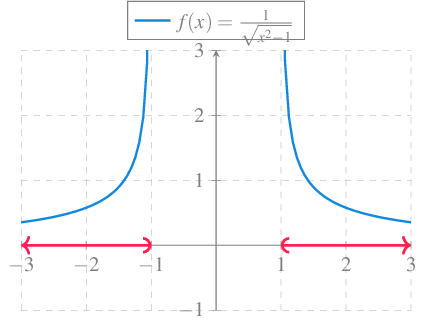

Funciones de números reales
Análisis Matemático
El concepto de función
Definición 1 (Función de una variable) Una función \(f\) de un conjunto \(A\) en otro \(B\) es una relación que asocia cada elemento \(a\in A\), con un único elemento de \(B\) que se denota \(f(a)\), y se llama imagen de \(a\) mediante \(f\).
\[\begin{align*} f:\,&A\longrightarrow B\\ &a\longrightarrow f(a) \end{align*}\]
Cuando el conjunto inicial y final es el de los números reales \(\mathbb{R}\), entonces se dice que \(f:\mathbb{R}\rightarrow \mathbb{R}\) es una función real de variable real.
Representación de funciones por extensión
Representación en forma de tabla. Se escriben los pares \((x,y)\) de la función de forma explícita en una tabla.
\[ \begin{array}{|c|r|r|r|r|r|r|} \hline x & -2 & -1 & 0 & 1 & 2 & \cdots \\ \hline y & 4 & 1 & 0 & 1 & 4 & \cdots \\ \hline \end{array} \]
Representación gráfica. Se representan los pares \((x,y)\) de la función mediante puntos con las correspondientes coordenadas en el plano Real cartesiano.
Representación de funciones por intensión
Representación algebraica explícita. Se da fórmula o expresión \(f(x)\) que determina el valor de \(y\) asociado a cada \(x\) mediante la función.
\[y=x^2\]
Representación algebraica implícita. Se da una ecuación que relaciona dos variables \(x\) e \(y\), que satisfacen todos los pares \((x,y)\) de la función y solo ellos.
\[y-x^2=0\]
Representación algebraica paramétrica
\[\begin{cases} x = t \\ y = t^2 \end{cases} \]
La representación algebraica paramétrica puede dar lugar a relaciones que no son funciones. Por ejemplo \[\begin{cases} x = t^2 \\ y = t \end{cases} \] que no es una función al asignar a los valores de \(x\) dos imágenes distintas.
Dominio de una función
Definición 2 (Dominio de una función) El dominio de una función \(f\) es el conjunto de valores para los que la función está definida
\[Dom(f)=\{x\in \mathbb{R}: f(x)\in \mathbb{R}\}\]
Ejemplo 1 Dada la función \[f(x)=\frac{1}{\sqrt{x^2-1}}\]

\[\mbox{Dom}(f)=(-\infty,-1)\cup(1,\infty)\]
Imagen de una función
Definición 3 (Imagen de una función) La imagen de una función \(f\) es el conjunto de valores que la función puede tomar
\[Img(f)=\{y\in \mathbb{R}: y=f(x) \mbox{ para algún } x\in\mathbb{R}\}\]
Ejemplo 2 Dada la función \(f(x)=x^2-2\)
\[\mbox{Img}(f)=[-2,\infty)\]
Función constante
Definición 4 (Función constante) Se dice que una función \(f: \mathbb{R}\rightarrow \mathbb{R}\) es una funcion constante, cuando asocia cada elemento \(x\in \mathbb{R}\) con el mismo número \(c\in\mathbb{R}\), es decir,
\[f(x)=c\ \forall x\in\mathbb{R}.\]
El dominio de la función constante \(f(x)=c\) es \(\mathbb{R}\) y su imagen \(\{c\}\).
Función identidad
Definición 5 (Función Identidad) Se llama función identidad, a la función \(Id: \mathbb{R}\rightarrow \mathbb{R}\) que asocia cada elemento \(x\in \mathbb{R}\) con sigo mismo, es decir,
\[Id(x)=x.\]
El dominio y la imagen de la función identidad es \(\mathbb{R}\).
Álgebra de funciones
Definición 6 (Funciones suma, resta, producto y cociente) Dadas dos funciones \(f,g: \mathbb{R}\rightarrow \mathbb{R}\) se definen las siguientes funciones:
- Función suma: \((f+g)(x) = f(x)+g(x)\) \(\forall x\in\mathbb{R}\).
- Función resta: \((f-g)(x) = f(x)-g(x)\) \(\forall x\in\mathbb{R}\).
- Función producto: \((f\cdot g)(x) = f(x)\cdot g(x)\) \(\forall x\in\mathbb{R}\).
- Función cociente: \((f/g)(x) = \frac{f(x)}{g(x)}\) \(\forall x\in\mathbb{R}\) tal que \(g(x)\neq 0\).
Proposición 1 Dadas dos funciones \(f,g: \mathbb{R}\rightarrow \mathbb{R}\), se cumple:
- \(\operatorname{Dom}(f+g)=\operatorname{Dom}(f)\cap \operatorname{Dom}(g)\)
- \(\operatorname{Dom}(f-g)=\operatorname{Dom}(f)\cap \operatorname{Dom}(g)\)
- \(\operatorname{Dom}(f\cdot g)=\operatorname{Dom}(f)\cap \operatorname{Dom}(g)\)
- \(\operatorname{Dom}(f/g)=(\operatorname{Dom}(f)\cap \operatorname{Dom}(g))\setminus \{x\in \mathbb{R}: g(x)=0\}\).
Función raíz
Definición 7 (Función raíz) Dada una función \(f: \mathbb{R}\rightarrow \mathbb{R}\) se definen la _función raíz \(n\)-ésima, como
\[ \sqrt[n]{f}(x) = \sqrt[n]{f(x)}\ \forall x \in \mathbb{R}. \]
Proposición 2 Dada una función \(f: \mathbb{R}\rightarrow \mathbb{R}\), se cumple que
\[ \operatorname{Dom}(\sqrt[n]{f})= \begin{cases} \operatorname{Dom}(f) & \mbox{si $n$ es impar,}\\ \operatorname{Dom}(f)\setminus\{x\in\mathbb{R}: f(x)<0\} & \mbox{si $n$ es par} \end{cases} \]
Composición de funciones
Definición 8 (Composición de funciones) Dadas dos funciones \(g:A\rightarrow B\) y \(f:B\rightarrow C\), se define la función compuesta \(f\circ g\), (leído \(g\) compuesto con \(f\)) como la función
\[\begin{aligned} f\circ g:\,& A\longrightarrow C\\ & x\longrightarrow f(g(x))\end{aligned}\]
Para calcular la función compuesta \(f\circ g(x)\), primero se aplica \(g\) sobre \(x\) y luego, se aplica \(f\) sobre \(g(x)\):
\[x\stackrel{g}{\longrightarrow}g(x)\stackrel{f}{\longrightarrow}f(g(x))\]
Ejemplo 3 Si \(g(x)=\sqrt x\) y \(f(x)=\operatorname{sen} x\), entonces
\[f\circ g(x)=f(g(x))=f(\sqrt x)=\operatorname{sen} \sqrt x.\]
Función inversa
Definición 9 (Función inversa) Se llama función inversa de \(f:A\rightarrow B\) a la función \(f^{-1}:B\rightarrow A\) (cuando exista) que cumple
\[f\circ f^{-1}=f^{-1}\circ f=Id(x)\]
La función inversa de \(f\) deshace o revierte el efecto de \(f\). Es decir, si \(f:A\rightarrow B\) asocia un elemento \(x\in A\) con otro \(y\in B\), entonces \(f^{-1}\) asocia el elemento \(y\) con el \(x\).

Ejemplo 4 La inversa de \(f(x)=x^3\) es la función \(f^{-1}(x)=\sqrt[3]{x}.\) Sin embargo, la inversa de la función \(x^2\) no es \(\sqrt{x}\) ya que la raíz tiene dos imágenes, una positiva y otra negativa, y por tanto no sería una función.
Crecimiento de una función
Definición 10 (Función creciente y decreciente) Se dice que una función \(f\) es creciente en un intervalo \(I\), si para todo \(x_1,x_2\in I\), con \(x_1<x_2\), se cumple \(f(x_1)\leq f(x_2)\).
Se dice que una función \(f\) es decreciente en un intervalo \(I\), si para todo \(x_1,x_2\in I\), con \(x_1<x_2\), se cumple \(f(x_1)\geq f(x_2)\).
Extremos de una función
Definición 11 (Máximo y mínimo relativo) Se dice que una función \(f:\mathbb{R}\rightarrow\mathbb{R}\) tiene un máximo relativo en \(a\), si existe un \(\delta>0\) tal que para todo \(x\in (a-\delta,a+\delta)\) se cumple \(f(a)\geq f(x)\).
Y se dice que \(f\) tiene un mínimo relativo en \(a\), si existe un \(\delta>0\) tal que para todo \(x\in (a-\delta,a+\delta)\) se cumple \(f(a)\leq f(x)\).
Concavidad de una función
Definición 12 (Función cóncava hacia arriba y hacia abajo) Se dice que una función \(f\) es cóncava hacia arriba en un intervalo \(I\), si para todo \(x_1,x_2\in I\), con \(x_1<x_2\), se cumple que el segmento que une los puntos \((x_1,f(x_1))\) y \((x_2,f(x_2))\) queda por encima de la gráfica de \(f\).
Se dice que una función \(f\) es cóncava hacia abajo en un intervalo \(I\), si para todo \(x_1,x_2\in I\), con \(x_1<x_2\), se cumple que el segmento que une los puntos \((x_1,f(x_1))\) y \((x_2,f(x_2))\) queda por debajo de la gráfica de \(f\).
Al punto donde cambia la concavidad de una función se le llama punto de inflexión.
Funciones periódicas
Definición 13 (Función periódica y periodo) Se dice que una función \(f\) es periódica si existe un valor \(h>0\) tal que
\[f(x+h)=f(x)\]
para todo \(x\in \mbox{Dom}(f)\).
Al menor valor de \(h\) que verifica la igualdad anterior se le llama periodo de \(f\), y a la diferencia entre el máximo y el mínimo de la función se le llama amplitud de \(f\).
Funciones polinómicas
Definición 14 (Función polinómica) Una función polinómica es una función de la forma
\[f(x)=a_0+a_1x+a_2x^2+\cdots+a_nx^n,\]
donde \(n\) es un entero no negativo que se llama grado del polinomio, y \(a_0,\ldots,a_n\) son constantes reales (\(a_n\neq 0\)) que se llaman coeficientes del polinomio.
Ejemplo 5
Propiedades de las funciones polinómicas
- Su dominio es \(\mathbb{R}\).
- Si el grado es impar, su imagen es \(\mathbb{R}\).
- La función identidad \(Id(x)=x\) es un polinomio de grado 1.
- Las funciones constantes \(f(x)=c\) son polinomios de grado 0.
- Un polinomio de grado \(n\) tiene a lo sumo \(n\) raíces (puntos donde \(f(x)=0\)).
Funciones racionales
Definición 15 (Función racional) Una función racional es una función de la forma
\[f(x)=\frac{p(x)}{q(x)}\]
donde \(p(x)\) y \(q(x)\) son funcione polinómicas con \(q(x)\neq 0\).
Ejemplo 6

Propiedades de las funciones racionales
- Su dominio es \(\mathbb{R}\) menos las raíces del polinomio del denominador. En estos puntos suele haber asíntotas verticales.
- La tendencia en \(\infty\) y \(-\infty\) depende del grado del numerador y del denominador. Si \(f(x)=\dfrac{a_0+\cdots +a_nx^n}{b_0+\cdots+b_mx^m}\), entonces
- Si \(n>m\) \(\rightarrow\) \(f(\pm\infty)=\pm\infty\).
- Si \(n<m\) \(\rightarrow\) \(f(\pm\infty)=0\).
- Si \(n=m\) \(\rightarrow\) \(f(\pm\infty)=\dfrac{a_n}{b_m}\).
- Los polinomios son casos particulares de funciones racionales.
- Pueden descomponerse en suma de fracciones simples.
Funciones potenciales
Definición 16 (Función potencial) Una función potencial es una función de la forma \[f(x)=x^r,\] donde \(r\) es un número real.
Ejemplo 7
Propiedades de las funciones potenciales
- Si el exponente es un número racional \(n/m\), entonces \[x^{n/m}=\sqrt[m]{x^n}.\] Estas funciones se llaman irracionales. En este caso,
- si \(m\) es impar el dominio es \(\mathbb{R}\),
- si \(m\) es par el dominio es \(\mathbb{R}^+\).
- Todas pasan por el punto \((1,1)\).
- El crecimiento depende del exponente. Si \(x>0\) entonces:
- Exponente positivo \(\Rightarrow\) función creciente.
- Exponente negativo \(\Rightarrow\) función decreciente.
Además, si \(f(x)=x^r\) y \(g(x)=x^s\), entonces: - Si \(r<s\) \(\Rightarrow\) \(f(x)>g(x)\) si \(0<x<1\) y \(f(x)<g(x)\) si \(x>1\).
- Si \(r>s\) \(\Rightarrow\) \(f(x)<g(x)\) si \(0<x<1\) y \(f(x)>g(x)\) si \(x>1\).
- Los polinomios de la forma \(f(x)=x^n\) son un caso particular de funciones potenciales.
Funciones exponenciales
Definición 17 (Función exponencial) Una función exponencial de base \(a\) es una función de la forma \[f(x)=a^x,\] donde \(a\) es un valor real positivo distinto de 1.
Ejemplo 8
Propiedades de las funciones exponenciales
- Su dominio es \(\mathbb{R}\).
- Su imagen es \(\mathbb{R}^+\).
- Todas pasan por el punto \((0,1)\).
- El crecimiento depende de la base. Si \(f(x)=a^x\) entonces
- Si \(0<a<1\) \(\Rightarrow\) función decreciente.
- Si \(a>1\) \(\Rightarrow\) función creciente. Además, si \(f(x)=a^x\) y \(g(x)=b^x\) con \(a<b\), entonces
- Si \(x<0\) \(\Rightarrow\) \(f(x)>g(x)\).
- Si \(x>0\) \(\Rightarrow\) \(f(x)<g(x)\).
- Un caso particular sería \(a=1\) que es una función constante.
Funciones logarítmicas
Definición 18 (Función logarítmica) Dada una función exponencial \(f(x)=a^x\), se define la función logarítmica de base \(a\) como la función inversa de \(f\), y se denota
\[f^{-1}(x)=\log_a x,\]
donde \(a\) es un valor real positivo distinto de 1.
Ejemplo 9
Propiedades de las funciones logarítmicas
- Por ser la inversa de la función exponencial, sus gráficas son simétricas respecto a la bisectriz del primer y tercer cuadrantes. Por tanto:
- Su dominio es la imagen de la función exponencial, es decir \(\mathbb{R}^+\).
- Su imagen es el dominio de la función exponencial, es decir \(\mathbb{R}\).
- Todas pasan por el punto \((1,0)\).
- El crecimiento depende de la base. Si \(f(x)=\log_a x\) entonces
- Si \(0<a<1\) \(\Rightarrow\) función decreciente.
- Si \(a>1\) \(\Rightarrow\) función creciente. Además, si \(f(x)=\log_a x\) y \(g(x)=\log_b x\) con \(a<b\), entonces
- Si \(0<x<1\) \(\Rightarrow\) \(f(x)<g(x)\).
- Si \(x>1\) \(\Rightarrow\) \(f(x)>g(x)\)
- No tiene sentido para \(a=1\) por que sería una función constante.
Funciones trigonométricas
Surgen en geometría al medir las relaciones entre los catetos de un triángulo rectángulo, que dependen del ángulo del cateto contiguo y la hipotenusa de dicho triángulo. No obstante, esta no es la única definición posible, sino que también pueden definirse a partir de la función exponencial compleja.
- Seno
- Coseno
- Tangente
- Arcoseno
- Arcocoseno
- Arcotangente
Seno de un ángulo
Definición 19 (Seno de un ángulo) Sea \(\alpha\) cualquiera de los ángulos agudos de un triángulo rectángulo, se define el seno de \(\alpha\), y se nota \(\operatorname{sen} \alpha\), como el cociente entre el cateto opuesto y la hipotenusa.
Función seno
Definición 20 (Función seno) Se define la función seno,
\[f(x)=\operatorname{sen}(x)\]
como la función que asocia a cada ángulo \(x\) (habitualmente medido en radianes) su seno.
Ejemplo 10
Propiedades de la función seno
- Su dominio es \(\mathbb{R}\).
- Su imagen es el intervalo \([-1,1]\).
- Es periódica, con periodo \(2\pi\) y amplitud \(2\)
\[\operatorname{sen} (x+2k\pi)= \operatorname{sen} x\quad \forall k\in \mathbb{Z}\]
- Algunos valores para recordar: \(\operatorname{sen} 0=0\), \(\operatorname{sen} \pi/6= 1/2\), \(\operatorname{sen} \pi/4=\sqrt{2}/2\), \(\operatorname{sen} \pi/3= \sqrt{3}/2\), \(\operatorname{sen} \pi/2 =1\), \(\operatorname{sen} \pi = 0\), \(\operatorname{sen} 3\pi/2=-1\), \(\operatorname{sen} 2\pi=0\).
- Es una función impar: \(\operatorname{sen}(-x)=-\operatorname{sen} x\).
Coseno de un ángulo
Definición 21 (Coseno de un ángulo) Sea \(\alpha\) cualquiera de los ángulos agudos de un triángulo rectángulo, se define el coseno de \(\alpha\), y se nota \(\cos \alpha\), como el cociente entre el cateto contiguo y la hipotenusa.
Función coseno
Definición 22 (Función coseno) Se define la función coseno,
\[f(x)=\cos(x)\]
como la función que asocia a cada ángulo \(x\) (habitualmente medido en radianes) su coseno.
Ejemplo 11
Propiedades de la función coseno
Su dominio es \(\mathbb{R}\).
Su imagen es el intervalo \([-1,1]\).
Es periódica, con periodo \(2\pi\) y amplitud \(2\)
\[\cos (x+2k\pi)= \cos x\quad \forall k\in \mathbb{Z}\]
Algunos valores para recordar: \(\cos 0=1\), \(\cos \pi/6= \sqrt{3}/2\), \(\cos \pi/4=\sqrt{2}/2\), \(\cos \pi/3= \sqrt{2}/2\), \(\cos \pi/2 =0\), \(\cos \pi = -1\), \(\cos 3\pi/2=0\), \(\cos 2\pi=1\).
Es una función par: \(\cos(-x)=\cos x\).
Tangente de un ángulo
Definición 23 (Tangente de un ángulo) Sea \(\alpha\) cualquiera de los ángulos agudos de un triángulo rectángulo, se define la tangente de \(\alpha\), y se nota \(\operatorname{tg} \alpha\), como el cociente entre el cateto opuesto y el cateto contiguo.
Función tangente
Definición 24 (Función tangente) Se define la función tangente,
\[f(x)=\operatorname{tg}(x)=\frac{\operatorname{sen}(x)}{\cos(x)}\]
como la función que asocia a cada ángulo \(x\) (habitualmente medido en radianes) su tangente.
Ejemplo 12
Propiedades de la función tangente
Su dominio es \(\mathbb{R}\) menos las raíces del coseno, es decir \(\mathbb{R}-\{2k\pi/2: k\in \mathbb{Z}\}\).
Su imagen es \(\mathbb{R}\).
Es periódica, con periodo \(2\pi\)
\[\operatorname{tg} (x+2k\pi)= \operatorname{tg} x\quad \forall k\in \mathbb{Z}\]
Algunos valores para recordar: \(\operatorname{tg} 0=0\), \(\operatorname{tg} \pi/6= 1/\sqrt{3}\), \(\operatorname{tg} \pi/4=1\), \(\operatorname{tg} \pi/3= \sqrt{3}\), \(\operatorname{tg} \pi =0\), \(\operatorname{tg} 2\pi=0\).
Función arcoseno
Definición 25 (Función arcoseno) Se define la función arcoseno,
\[f(x)=\operatorname{arcsen}(x)\]
como la función inversa de la función seno.
Ejemplo 13
Propiedades de la función arcoseno
- Por ser la inversa de la función seno, sus gráficas son simétricas respecto a la bisectriz del primer y tercer cuadrantes. Por tanto:
- Su dominio es la imagen de la función seno, es decir \([-1,1]\).
- Su imagen es el dominio restringido de la función seno, es decir \([-\pi/2,\pi/2]\).
- Es creciente en todo el dominio.
Función arcocoseno
Definición 26 (Función arcocoseno) Se define la función arcocoseno,
\[f(x)=\operatorname{arccos}(x)\]
como la función inversa de la función coseno.
Ejemplo 14
Propiedades de la función arcoseno
- Por ser la inversa de la función coseno, sus gráficas son simétricas respecto a la bisectriz del primer y tercer cuadrantes. Por tanto:
- Su dominio es la imagen de la función coseno, es decir \([-1,1]\).
- Su imagen es el dominio restringido de la función coseno, es decir \([0,\pi]\).
- Es decreciente en todo el dominio.
Función arcotangente
Definición 27 (Función arcotangente) Se define la función arcotangente,
\[f(x)=\operatorname{arctg}(x)\]
como la función inversa de la función tangente.
Ejemplo 15

Propiedades de la función arcotangente
- Por ser la inversa de la función tangente, sus gráficas son simétricas respecto a la bisectriz del primer y tercer cuadrantes. Por tanto:
- Su dominio es la imagen de la función tangente, es decir \(\mathbb{R}\).
- Su imagen es el dominio restringido de la función tangente, es decir \((-\pi/2,\pi/2)\).
- Es creciente en todo el dominio.
Algunas relaciones trigonométricas
- \(\operatorname{sen}^2 x+\cos^2 x=1\)
- \(\operatorname{sen}(x+y)=\operatorname{sen} x \cos y+\cos x \operatorname{sen} y\)
- \(\cos(x+y)=\cos x \cos y-\operatorname{sen} x \operatorname{sen} y\)
- \(\operatorname{tg} (x+y)= \dfrac{\operatorname{tg} x+\operatorname{tg} y}{1-\operatorname{tg} x \operatorname{tg} y}\)
- \(\operatorname{sen} x + \operatorname{sen} y = 2 \operatorname{sen} \dfrac{x+y}{2}\cos\dfrac{x-y}{2}\)
- \(\cos x + \cos y = 2 \cos \dfrac{x+y}{2}\cos\dfrac{x-y}{2}\)
- \(\cos x - \cos y = -2 \operatorname{sen} \dfrac{x+y}{2}\operatorname{sen}\dfrac{x-y}{2}\)